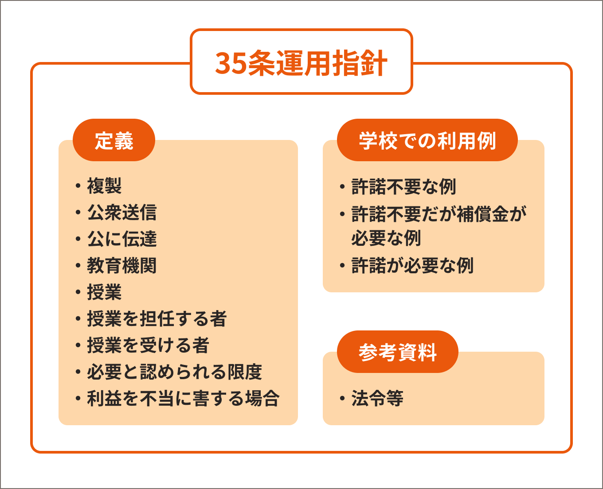

改正著作権法第35条運用指針について
さきほど説明したフォーラムで、授業における著作物の運用についてまとめたものが「運用指針」です。本ウェブサイトでは「改正著作権法第35条運用指針令和3（2021）年度版」（2020年12月）に基づいて、わかりやすく説明をします。これは、SARTRASのページで全文が読めます。また、PDFファイルをダウンロードすることも可能です。「改正著作権法第35条運用指針」は2020年度に初めて公開され、2021年度に改訂されています。この内容について、現在もフォーラムで話し合いがおこなわれているので、今後も改訂される可能性があります。常に最新版をチェックするようにしましょう。
Memo
「改正著作権法第35条運用指針（令和3（2021）年度版）特別活動追補版」（2021年11月）も公開されています。
なお、本ウェブサイトでは、簡単に「運用指針」と略して記載します。また、本ウェブサイトは2021年度版の運用指針をもとに説明します【35条運用指針】。
【35条運用指針】用語の定義
1章でも用語について説明しましたが、運用指針では授業で著作物を扱う際の具体的なシーンを想定して、用語を説明しています。
複製（運用指針5ページ）
いわゆるコピーですが、紙をPDFにしたり、紙の文献を写真に撮ったりするのも「複製」になります。以下のような例が「複製」に該当します。
該当する例
- 文学作品を、黒板に板書
- 文学作品を、ノートへ書き込み
- 文学作品を、パソコン等でWordファイルに入力し、保存
- 絵画を、画用紙に模写
- 彫刻を、紙粘土により模造
- 紙に印刷された著作物を、コピー機でコピー
- 紙に印刷された著作物を、スキャンしてPDFファイルで保存
- 電子ファイルの著作物を、パソコンやUSBメモリに保存
- 電子ファイルの著作物を、サーバに蓄積（バックアップも含む）
- テレビ番組を、ハードディスクへ録画
- プロジェクターでスクリーン等に投影した映像データを、カメラやスマートフォンなどで撮影
35条1項で複製した複製物は、授業において配布することができます（47条の7）。
公衆送信（運用指針5−6ページ）
放送、有線放送、インターネット送信、その他の方法により、「不特定の者または特定多数の者（公衆）」に送信することを言います。Webサーバに保存してインターネットを通じて送信可能な状態にすること（送信可能化）も含まれます。授業における教員等と学生・生徒間の送信は、公衆送信に該当すると考えられます。
該当する例
- 学外に設置されているサーバに保存された著作物を、学生・生徒等からのアクセスに応じて送信
- 多数の学生・生徒等に著作物をメール送信
- 学校のホームページに著作物を掲載
- テレビ放送
- ラジオ放送
該当しない例
-
校内放送のように学校の同一の敷地内に設置されている放送設備や、サーバを用いて行われる同一の構内への送信（構外からアクセスできるものを除く）

小中
- わたしのクラス30人くらいですけど、公衆になりますか？

隅木
-
運用指針6ページに「一般的に、授業における教員等と履修者間の送信は、公衆送信に該当すると考えられます」とあるので、小中先生のクラスも公衆になると考えた方がよいですね。
実は、著作権法で言う「公衆」が具体的に何人以上なのかは明確に決められていないんです。
運用指針によると、少なくとも小学校のクラスの標準的な人数で「公衆」になるのでしょうが、具体的に何人以上という基準はありません。こういう法律的にグレーなところの扱いが難しいんですが、フォーラムでもまだ人数についての共通認識は得られていないようです。

小中
-
わかんないんだったら、とりあえず気をつけた方がいいですね……（ぶるぶる）。

隅木
-
注意が必要なのは、特定できない人（不特定）の場合は、人数が少なくても「公衆」と解釈されます。このあたりは専門家でも意見が分かれているところでもあります。

大院
- おれのゼミは5人しかいないけど、どうなんだ？
隅木
-
人数も少ないからと言って「公衆」にならないのではありません。修了した人が出たり、新しく入ったりする人もいらっしゃると思うので、1つの著作物を利用する人数がころころ変わるとなると「不特定」となり、「公衆」にあたります。
例えば、ゼミの定員の枠が厳格に決まっており、かつ、10名未満であるなど「公衆」にあたらない一定の基準がフォーラムで示されることが期待されます。
公に伝達（運用指針9ページ）
放送やインターネット配信などの「公衆送信」は、公衆により直接受信されることを目的とするものを言います。公衆送信されている著作物を受信装置を用いて、さらに公に見せたり聞かせたりすることを「公の伝達」と言います。
該当する例
-
授業内容に関係するネット上の動画を授業中に受信し、教室に設置されたディスプレイ等で学生や生徒に視聴させる
- 授業内容に関係するWebサイトを、教室でプロジェクターを使ってスクリーンに投影し、学生や生徒に見せる
35条が適用される「教育機関」（運用指針6ページ）
組織的、継続的に教育活動を営む非営利の教育機関であり、根拠法令に基づいて設置された機関が、35条が適用される教育機関になります。
該当する例
-
幼稚園、小学校、中学校、義務教育学校、高等学校、中等教育学校、特別支援学校、高等専門学校、各種学校、専修学校、大学等（学校教育法）
-
防衛大学校、税務大学校、自治体の農業大学校等の大学に類する教育機関（各省の設置法や組織令など関係法令等）
- 職業訓練等に関する教育機関（職業能力開発促進法等）
-
保育所、認定こども園、学童保育（児童福祉法、就学前の子どもに関する教育、保育等の総合的な提供の推進に関する法律）
-
公民館、博物館、美術館、図書館、青少年センター、生涯学習センター、その他これに類する社会教育施設（社会教育法、博物館法、図書館法等）
- 教育センター、教職員研修センター（地方教育行政の組織及び運営に関する法律等）
-
学校設置会社経営の学校（構造改革特別区域法。営利目的の会社により設置される教育機関だが、特例で教育機関に該当）
該当しない例
- 営利目的の会社や個人経営の教育施設
- 専修学校または各種学校の認可を受けていない予備校・塾
- カルチャーセンター
- 企業や団体等の研修施設
35条が適用される「授業」（運用指針7ページ）
ここで言う「授業」は、一般に言う「授業」ではなく、あくまでも35条を適用できる「授業」になります。運用指針では「学校その他の教育機関の責任において、その管理下で教育を担任する者が学習者に対して実施する教育活動」と定義されています。学生が自主的に行っている活動や、教員同士の教え合いなどは含まれないことになります。
該当する例
-
講義、実習、演習、ゼミ等
- 学生・生徒の予習・復習も「授業の過程」に含む
- 反転学習の事前学習も「授業の過程」に含む
-
初等中等教育の特別活動
- 学級活動・ホームルーム活動
- クラブ活動
- 児童・生徒会活動
- 学校行事等（入学式、卒業式、始業式、終業式、修学旅行、運動会、水泳大会、文化祭、合唱祭等）
- 初等中等教育の部活動、課外補習授業等
- 教育センター、教職員研修センターが行う教員に対する教育活動
- 教員の免許状更新講習
-
通信教育での通信授業（紙やLMSでの添削指導や試験等）、対面授業、ネット利用したメディア授業（Zoomなどを用いたオンライン配信授業）等
-
学校や大学などの教育機関が主催する公開講座
- 社会人など学外の者を対象とした履修証明プログラム
- 社会教育施設が主催する講座、講演会等
Memo
自らの事業として行うもの。収支予算の状況などに照らし、事業の規模等が相当程度になるものについては別途検討が必要。
該当しない例
- 入学志願者に対する学校説明会、オープンキャンパスでの模擬授業等
- 教職員会議
-
大学での・として実施される、教職員を対象とした研修、セミナー、情報提供
- 高等教育での課外活動（サークル活動等）
- 自主的なボランティア活動（単位認定がされないもの）
- 保護者会
- 学校その他の教育機関の施設で行われる自治会主催の講演会、PTA主催の親子向け講座等
Word
FD（Faculty Development）
教員が授業内容・方法を改善し向上させるための組織的な取り組み（研修等）。
Word
SD（Staff Development）
職員を対象とした管理運営や教育・研究支援までを含めた資質向上のための組織的な取り組み（研修等）。
大院
-
初等中等の部活動は「授業」でよくて、大学のサークル活動は「授業」じゃないのか。
隅木
-
小学校のクラブ活動は、学習指導要領で「特別活動」という教育活動であると規定されています。また、中高の部活動は生徒の自主的な活動ですが、担当教員の指導のもと行うなど特別活動と同等なものとみなされているようです。
一方、大学の場合はこのようなものではないため、「授業」には該当しないということになっています。
「教育を担任する者」と「授業を受ける者」（運用指針8ページ）
続いて、35条における、「教育を担任する者」と「授業を受ける者」が誰なのかについて説明します。こちらは、以下のように定義されています。
教育を担任する者＝実際に授業をおこなう人
- 教諭、教授、講師などで、名称、教員免許状の有無、常勤・非常勤などの雇用形態は問われません。
-
教員・教師等の指示を受けて、事務職員やTA（Teaching
Assistant）などの教育支援者・補助者が、学校内の設備を用いるなど学校の管理が及ぶ形で、複製や公衆送信を行う場合は、教員・教師等の行為とされます。
授業を受ける者＝教員等の指導を受けて実際に学習する人
- 児童、生徒、学生、科目等履修生、受講者等などで、名称や年齢は問われません。
-
学生や生徒等の求めに応じて、事務職員やTAなどの教育支援者・補助者らが、学校内の設備を用いるなど学校の管理が及ぶ形で、複製や公衆送信を行う場合は、学生や生徒の行為とされます。
必要と認められる限度（運用指針8ページ）
授業に「必要と認められる限度」かどうかは、授業を担当する教員が判断します。なぜ、その複製・公衆送信・公の伝達をおこなう必要があるのか、客観的に説明できなければいけません。
「必要と認められる限度」かどうかは、例えば書籍であれば何ページまでとか、いつも使える基準があるわけではありません。授業の内容や進め方によって異なり、個々の授業の実態に応じて判断する必要があります。
必要と認められる場合
- 1クラス内への公衆送信。クラスの人数は問わない
-
授業参観に来ている保護者や、研究授業に参加している教員への授業資料のコピーの配布
必要と認められない場合
- 誰でもアクセスできるようなかたちでの公衆送信
-
授業内容に関係するテレビ番組を、教員がスクリーンに投影すれば済むような場合に、動画ファイルをクラス全員に配布
- 教材を他の教員との間で使い回し
- 授業で使用するのは一部であるのに、本の全部をコピーして学生・生徒に公衆送信
Point
運用指針に書かれている定義を理解して、35条を適用できるかを判断しましょう
著作権者の利益を不当に害することとなる場合（運用指針9−19ページ）
35条1項の終わりの方に「ただし、当該著作物の種類及び用途並びに当該複製の部数及び当該複製、公衆送信又は伝達の態様に照らし著作権者の利益を不当に害することとなる場合は、この限りでない。」と、書いてあります。このただし書きの部分に配慮が必要です。
小中
- 「利益を不当に害する」場合ってどんなときなんでしょう？
隅木
-
条文を読むだけでは、どの程度だと不当に害するのかよくわからないですよね。
運用指針11ページには「複製や公衆送信によって現実に市販物の売れ行きが低下したり、将来における著作物の潜在的販路を阻害したりすることがあるか否か」が判断する重要な観点であると書かれています。
例えば小学生が使う計算ドリル全部を、クラスの全員にコピーして配ってしまうと、ドリルを買う必要がなくなってしまいますよね。こういうことは、利益を不当に害していると判断されます。
しかしながら、状況や利用状態などによるので、判断が難しいところがあります。このあたりのこともフォーラムで話し合われていますので、説明していきます。
ただし書きでいう「利益を不当に害する」とは、基本的には販売の売れ行きが「不当に低下する」ことを意味します。たとえ「必要と認められる限度」だったとしても、その利用のしかたによって「著作権者の利益を不当に害する」と著作権者が客観的に説明できる場合には、無許諾で利用することはできません。
授業目的で無許諾で著作物を複製・公衆送信などが行われれば、多少なりとも市販物の売れ行きへの影響はあるでしょう。そのために補償金を支払うという制度ができました。ですので、少しの利用は補償金でカバーできると思われます。「利益を不当に害する」のは相当な量や使い方ということになります。
運用指針では、「利益を不当に害する」ことの考え方と例を示しています。
著作物の種類
ドリルやソフトウェアなどのように学生・生徒が1人1つずつ購入すべき著作物を、複製・公衆送信することは、販売を不当に低下させることとなり、利益を不当に害します。
短文の言語の著作物（俳句、短歌、詩など）、絵画及び写真の著作物などの場合は、全部の利用が不可欠であるとともに、部分的に利用することは同一性保持権の侵害になる可能性があります。そのような種類の著作物であれば、1つの著作物の全部を複製又は公衆送信をしても著作権者等の利益を不当に害する可能性は低いです。
一方、長編映画や小説などをまるごと全部複製・公衆送信することは、利益を不当に害する可能性が高いです。相当程度に入手困難かつ、合理的な手段で利用許諾を得ることができない著作物であれば、全部も可能となる場合もあり、個別に判断することが必要と考えられます。
大学の授業やゼミなどで、論文を読む場合は一般的には一報すべてを読むことが多いでしょう。一方、論文は専門的であるが故にその対象読者は限られているので、授業で複製・公衆送信を行う場合には著作権者の利益を不当に害することがないかよく検討する必要があります（3章
Q14、Q15）。
Memo
必要な論文が、大学で契約している電子ジャーナル、著者のサイト、機関リポジトリなどで無償でアクセスできるようになっている場合は、そのリンクを学生に提示しましょう。リンクの提示は複製にも公衆送信にもあたらないので問題になりません。
著作物の用途
学生・生徒向けに販売されている著作物の場合、35条の権利制限を適用すると売り上げに直接影響する可能性があります。ですので、そのほかの著作物の利用と比べて著作権者の利益を不当に害する可能性が高くなると思われます。
学生・生徒向けの教科書として作られている場合は、指定された教科書で皆が持っている状態であれば、その多くの部分を複製しても、著作権者の利益を不当に害する可能性は低いと考えられます。
複製の部数・公衆送信の受信者の数
運用指針18ページでは、受講者の人数によらず、当該授業の受講者の数までの複製・公衆送信は、著作権者の利益を不当に害さないとされています。
また、父兄参観や研究授業での教員参観などで学生と同一の資料を送信する場合、参観人数分を加えても、「必要と認められる限度」とされています。この場合には、利益を不当に害するものではないでしょう。
映画やテレビ番組の録画を教室で上映することは、非営利無償の上映にあたり許諾不要でおこなえます（38条1項）。しかし、動画の複製をつくって学生の人数分配布したり、オンデマンドでいつでも視聴できるようにしたりすることは、著作権者の利益を不当に害する可能性が高いと考えられます。
Memo
動画ファイルそのものでなく、それを視聴させている授業風景を録画したものをあとから視聴できるようにすることについては、動画ファイルの視聴と代替性はないので、著作権者の利益を不当に害する可能性は低いと考えられます。
複製・公衆送信・伝達の態様
態様とは耳慣れない言葉ですが、複製や公衆送信のやりかた、というほどの意味です。
著作物を製本して長期間保存できるような形で複製したり、画像や音声を単独で鑑賞可能なほど高品質なファイルとして複製したりするなど、複製物を単体で他の用途にも転用できるような形で作成することは、著作権者の利益を不当に害する可能性が高いと考えられます。
公衆送信をする場合に、受信できる人は授業をする人と受ける人に限定されるべきです。例えば学生が世界に情報発信をすることが、授業に必要な活動であったとしても、そこに35条適用の著作物を含めることは、著作権者の利益を不当に害することとなる可能性が高いと考えられます。
Memo
もちろん32条の「引用」が適用できれば問題ないです。
基本的な考え方は以上です。以下に例をまとめます。
全部を複製しても利益を不当に害さない可能性が高い例
-
採択された教科書中の著作物の利用
- 個々の作品（文章作品や写真・イラスト等）の他に、発行した出版社等による著作物も含む
- 採択された教科書の代替として使用される学習者用デジタル教科書の契約内の利用についてもOK
-
一部だけを使うことが難しいもの、一部を切り取ることによって同一性保持権を侵害してしてしまう場合
- 俳句、短歌、詩等の短文の言語の著作物
- 新聞に掲載された記事等の言語の著作物
- 写真、絵画（イラスト、版画等を含む）
- 彫刻その他の立体の美術の著作物
- 発行から相当期間を経て入手しにくくなった雑誌などの記事
-
学生・生徒が購入している資料の一部（図やグラフなどは全部）を、スクリーンに投影して見せるために複製すること
- 授業風景や解説の動画の中で映像の一部として用いられている著作物
利益を不当に害する可能性が高い例
-
1つの授業で、「1回目の授業で1章、2回目の授業で2章……」のように、全部の回で1冊の本の全部のコピーを渡してしまうこと
-
学生・生徒が通常購入して利用すべき著作物を、買わずに済むようなかたちで学生・生徒に提供すること
- ドリル、参考書、問題集、教材用楽譜、副読本、教育用映像ソフト、演劇用の脚本、部活で使う楽譜など
- プログラムやアプリケーションを1つもしくは1ライセンスだけ購入し、複数の学生・生徒に複製・配布すること
- 美術や写真等を集めて、高品質で製本したものを配布すること
-
授業で扱うかどうかわからない状態で、組織的に著作物を素材としてサーバに蓄積し、データベース化、ライブラリ化すること
- 授業では直接扱わないが、参考資料としてコピーを配布すること
Point
著作権者の利益を、不当に害してはいけない！
小中
-
要するに35条って、
「公表された著作物」を
該当する「教育機関」で、
教員や学生・生徒が
該当する「授業の過程」における利用のために、
授業に「必要と認められる限度」であって、
利益を不当に害さない量や使い方であれば、
著作権者の許諾をとらなくてもいいってことなんですね。

大院
- 教員と学生が複製と公の伝達、補償金払って公衆送信ができるってわけだな。
隅木
-
ちなみに著作隣接権についても、35条を適用できることとなっています（102条1項）。よって、実演、レコード、放送・有線放送された著作物を利用できます。